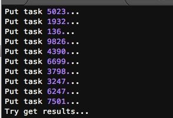
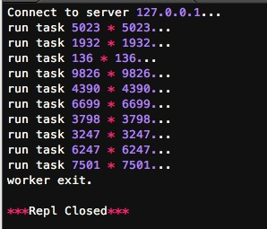
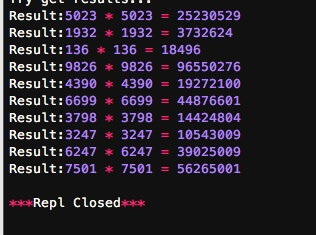
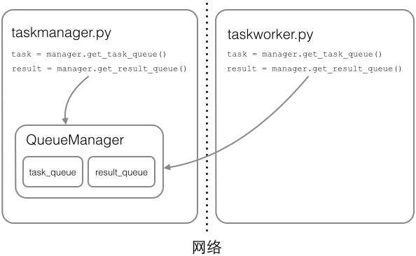

在Thread和Process中，应当优选Process，因为Process更稳定，而且，Process可以分布到多台机器上，而Thread最多只能分布到同一台机器的多个CPU上。
Python的multiprocessing模块不但支持多进程，其中managers子模块还支持把多进程分布到多台机器上。一个服务进程可以作为调度者，将任务分布到其他多个进程中，依靠网络通信。由于managers模块封装很好，不必了解网络通信的细节，就可以很容易地编写分布式多进程程序。
举个例子：如果我们已经有一个通过Queue通信的多进程程序在同一台机器上运行，现在，由于处理任务的进程任务繁重，希望把发送任务的进程和处理任务的进程分布到两台机器上。怎么用分布式进程实现？
原有的Queue可以继续使用，但是，通过managers模块把Queue通过网络暴露出去，就可以让其他机器的进程访问Queue了。
我们先看服务进程，服务进程负责启动Queue，把Queue注册到网络上，然后往Queue里面写入任务：
#taskmanager.py
#-*- coding: utf-8 -*-
import random,time,Queue
from multiprocessing.managers import BaseManager
#发送任务的队列
task_queue = Queue.Queue()
#接受结果的队列
result_queue = Queue.Queue()
#从BaseManager继承的QueueManager:
class QueueManager(BaseManager):
pass
#把两个Queue都注册到网络上, callable参数关联了Queue对象:
QueueManager.register('get_task_queue',callable=lambda:task_queue)
QueueManager.register('get_result_queue',callable=lambda:result_queue)
#绑定端口5000，设置验证码‘abc’：
manager = QueueManager(address=('',5000),authkey='abc')
#启动Queue
manager.start()
# 获得通过网络访问的Queue对象:
task = manager.get_task_queue()
result = manager.get_result_queue()
#放几个任务进去
for i in range(10):
n = random.randint(0, 10000)
print('Put task %d...' %n)
task.put(n)
#从result队列读取结果
print('Try get results...')
for i in range(10):
r = result.get(timeout=10)
print('Result:%s'%r)
#关闭
manager.shutdown()
请注意，当我们在一台机器上写多进程程序时，创建的Queue可以直接拿来用，但是，在分布式多进程环境下，添加任务到Queue不可以直接对原始的task_queue进行操作，那样就绕过了QueueManager的封装，必须通过manager.get_task_queue()获得的Queue接口添加。
然后，在另一台机器上启动任务进程（本机上启动也可以）：
#taskworker.py
#-*- coding: utf-8 -*-
import time
import sys
import Queue
from multiprocessing.managers import BaseManager
# 创建类似的QueueManager:
class QueueManager(BaseManager):
pass
# 由于这个QueueManager只从网络上获取Queue，所以注册时只提供名字:
QueueManager.register('get_task_queue')
QueueManager.register('get_result_queue')
# 连接到服务器，也就是运行taskmanager.py的机器:
server_addr = '127.0.0.1'
print('Connect to server %s...' % server_addr)
# 端口和验证码注意保持与taskmanager.py设置的完全一致:
m = QueueManager(address=(server_addr, 5000), authkey='abc')
# 从网络连接:
m.connect()
# 获取Queue的对象:
task = m.get_task_queue()
result = m.get_result_queue()
# 从task队列取任务,并把结果写入result队列:
for i in range(10):
try:
n = task.get(timeout=1)
print('run task %d * %d...' % (n, n))
r = '%d * %d = %d' % (n, n, n * n)
time.sleep(1)
result.put(r)
except Queue.Empty:
print('task queue is empty.')
# 处理结束:
print('worker exit.')
任务进程要通过网络连接到服务进程，所以要指定服务进程的IP。
现在，可以试试分布式进程的工作效果了。先启动taskmanager.py服务进程：
启动后：

等待result队列中的值。（目前为空)
taskmanager进程发送完任务后，开始等待result队列的结果。现在启动taskworker.py进程：

taskworker进程结束，在taskmanager进程中会继续打印出结果：

这个简单的Manager/Worker模型有什么用？其实这就是一个简单但真正的分布式计算，把代码稍加改造，启动多个worker，就可以把任务分布到几台甚至几十台机器上，比如把计算n*n的代码换成发送邮件，就实现了邮件队列的异步发送。
Queue对象存储在哪？注意到taskworker.py中根本没有创建Queue的代码，所以，Queue对象存储在taskmanager.py进程中：

而Queue之所以能通过网络访问，就是通过QueueManager实现的。由于QueueManager管理的不止一个Queue，所以，要给每个Queue的网络调用接口起个名字，比如get_task_queue。
authkey有什么用？这是为了保证两台机器正常通信，不被其他机器恶意干扰。如果taskworker.py的authkey和taskmanager.py的authkey不一致，肯定连接不上。
小结
Python的分布式进程接口简单，封装良好，适合需要把繁重任务分布到多台机器的环境下。
注意Queue的作用是用来传递任务和接收结果，每个任务的描述数据量要尽量小。比如发送一个处理日志文件的任务，就不要发送几百兆的日志文件本身，而是发送日志文件存放的完整路径，由Worker进程再去共享的磁盘上读取文件。